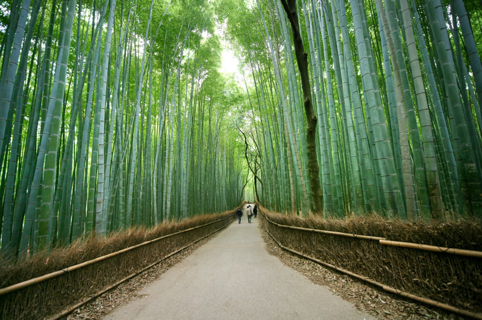
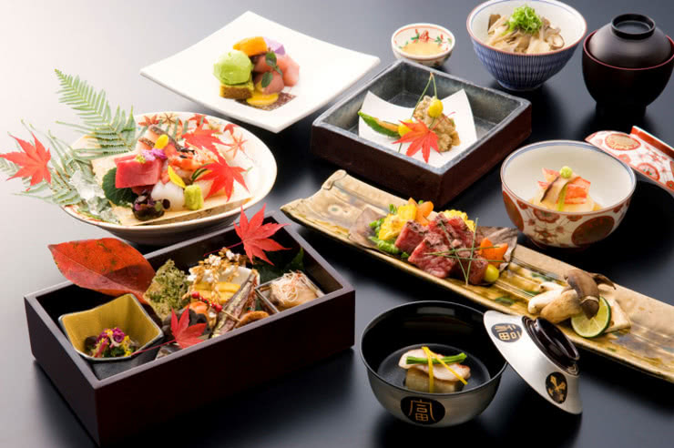

JAPAN
Kyoto's Arashiyama presents a special blend of nature and history. The Monkey Park, with monkeys in their habitat, and bamboo groves creating a serene atmosphere, offer a perfect escape. The old district of Gion, with cobblestone streets and traditional houses, transports visitors to the world of geishas and samurais. The juxtaposition of the Monkey Park's playful inhabitants against Arashiyama's bamboo forest and Gion's timeless ambiance makes this area essential for those seeking an authentic taste of Japanese culture.
Japanese cuisine, a sensory journey of precision and aesthetics, reflects the nation's dedication. From Tokyo's Tsukiji Fish Market's fresh sashimi to Osaka's vibrant street food and kaiseki's multi-course perfection, it invites exploration. Whether in bustling markets or traditional ryokans, Japan's diverse flavors weave into its cultural tapestry, inviting all to savor and appreciate the richness of its culinary heritage.
Top 10 Tourist Sights 📍
- Tokyo: Shibuya Crossing
- Tokyo: Harajuku
- Kyoto: Kinkaku-ji (Golden Pavilion)
- Kyoto: Fushimi Inari Shrine
- Hiroshima: Peace Memorial Park
- Osaka: Osaka Castle
- Nara: Todai-ji Temple
- Hokkaido: Shikisai-no-Oka Flower Fields
- Mount Fuji
- Okinawa: Shurijo Castle
Japan offers a diverse range of attractions that cater to different interests and preferences. Here are ten of the top tourist sights in Japan: